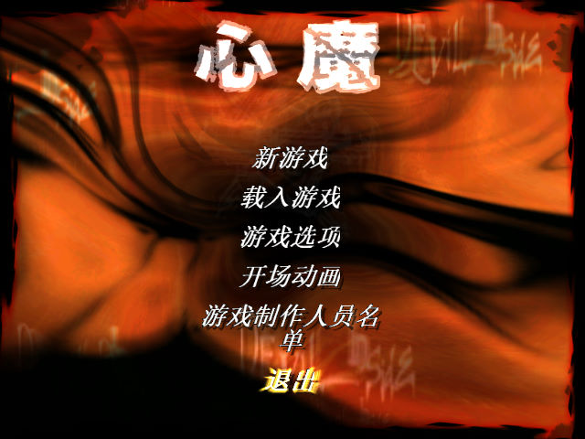
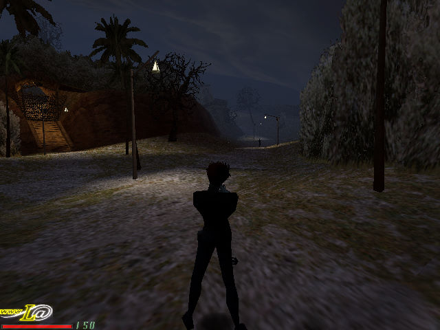

名稱：魔由心生／心魔／惡靈附身／惡靈內臟 (The Devil Inside，簡中／英文版)
簡介：Gamesquad 2000年出品的第三人稱射擊遊戲，由Cryo代理發行。大陸由晶合互動簡中
化並代理發行；台灣則由英特衛代理進口，但並未中文化 [待補]。


保護：光碟，破解碼：
Devil.exe (1.01版)
75 36 53 8B 1D 60 B5
EB -- -- -- -- -- --
75 4A 56 57 8B 3D
EB -- -- -- -- --
7D 39 8B 0D 6C 00
EB -- -- -- -- --
74 42 8B 0D 6C 00
EB -- -- -- -- --
25 73 44 61 74 61 73 2F (共5個)
2E 2F -- -- -- -- -- --
56 69 64 65 6F 73 2F 25 73 49 6E 74 72 6F 2E 68
-- -- -- -- -- -- -- 55 53 -- -- -- -- -- -- --
需將光碟上的Datas目錄拷貝到安裝目錄。
備註：由於3D卡相容性問題，只能使用Win64+dgVoodoo2執行。英文版在Win64遊戲會偵測不
到光碟，故務必進行破解，簡中版則無此一問題。
備註：Win64系統執行時，需設定Devil.exe為XP相容。
檔案：DIPatcher.rar = 英文1.01更新檔（簡中版無法使用）